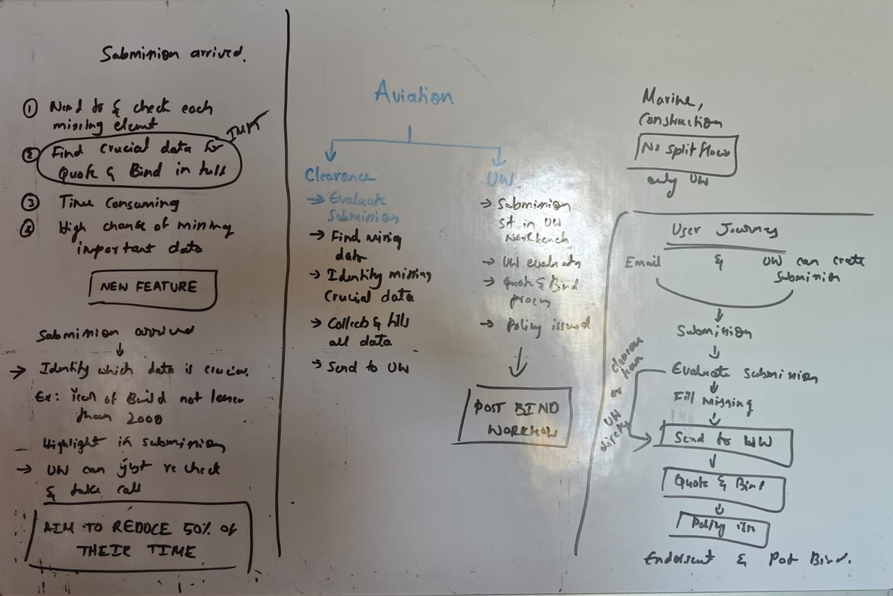
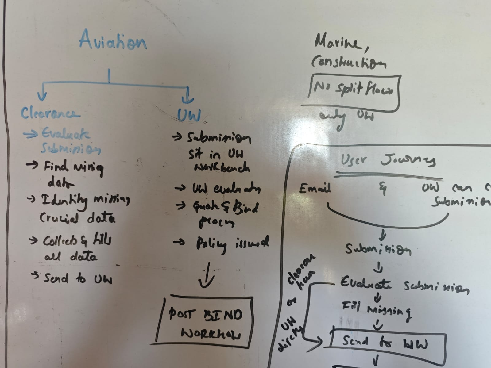
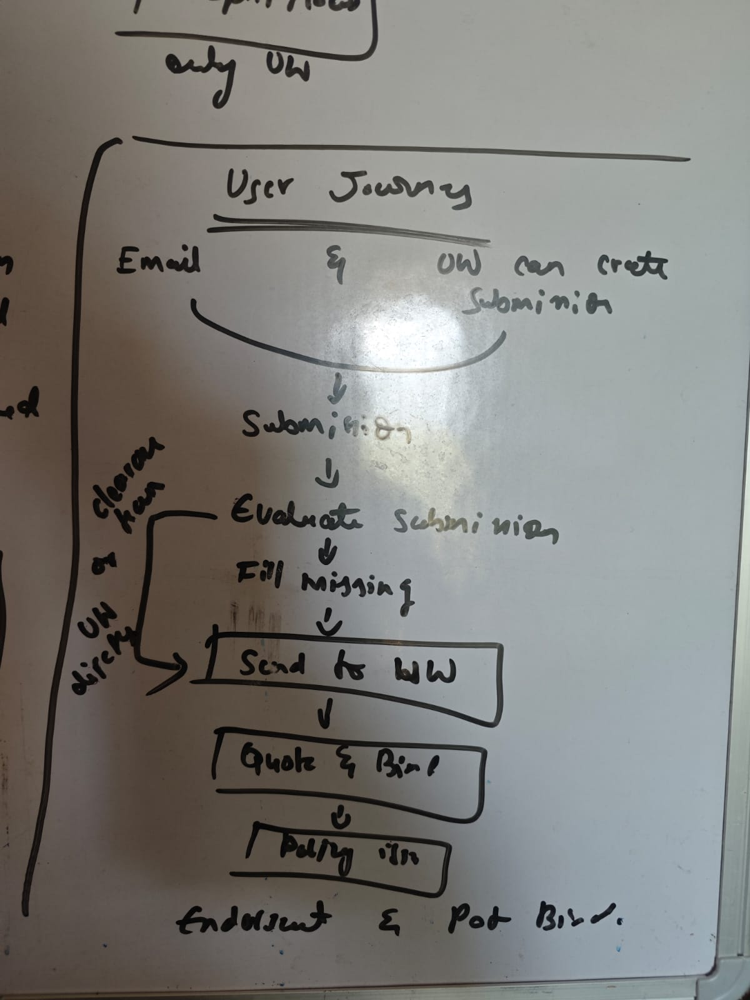
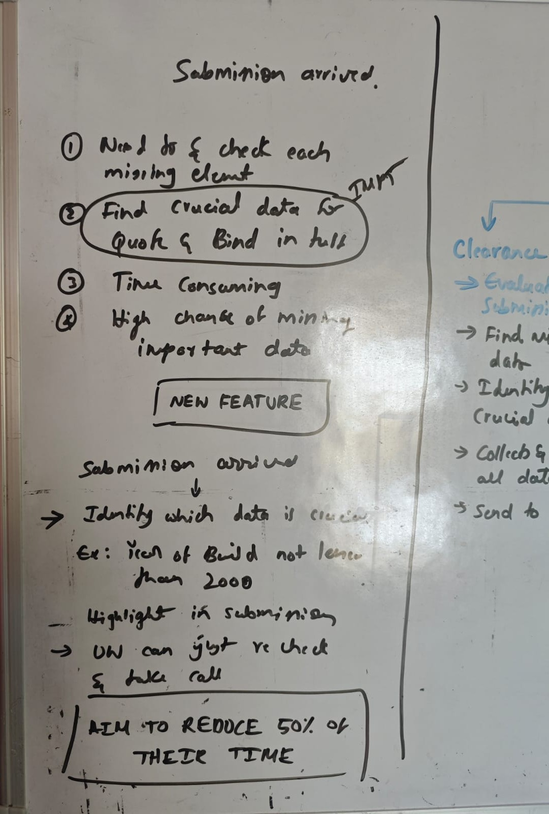
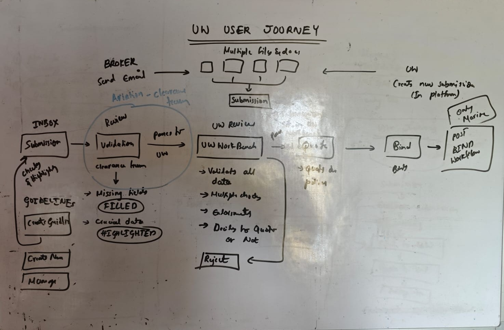
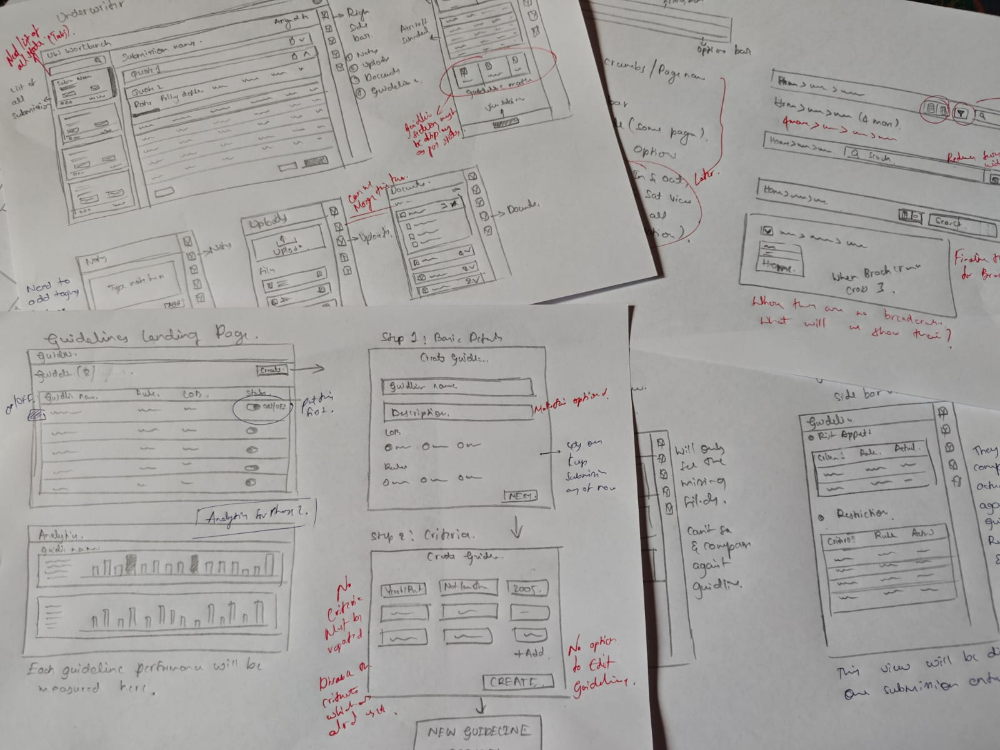

One workflow for every line of business
The submission workflow was built only for Marine. As Aviation, Construction and PV&T came on board, I redesigned it as one base that any line of business or client can configure.
My scope: the shared workflow, submission intake, guidelines, workbench, quote and bind
Same base. Configured per line.
Interface recreated with sample data. Product name and colours changed for confidentiality.
The workflow worked, but only for Marine.
It already turned emails, PDFs and spreadsheets into one submission. The problem was that every part of it was built around one line of business.
What we had
- One submission flow, designed around Marine data and terms.
- Every screen assumed a single line of business.
What was coming
- Aviation, Construction and PV&T, each with its own data, terms and steps.
- Several clients per line, each working their own way.
- Some clients had extra steps, like a separate clearance team.
What it added up to
A rebuild for every new line
Each new line would have meant a new design and a new build. Clients using more than one line would have had to learn a different product each time.
What the new workflow had to do
Before designing anything, I set four tests the new workflow had to pass.
- 1New lines, no redesign
- A new line of business should need configuration, not a new design.
- 2Many clients per line
- Each client should be able to work their own way on the same base.
- 3One experience everywhere
- A client using several lines should never have to learn a new product.
- 4Lower build cost
- Engineers build the core once, not once per line.
How I got there
Marine had a working flow. Aviation and Construction were next, with more lines planned, each with several clients. First we learned what each line needed. Then we built one system for all of them.
Every line worked a little differently
We started by speaking with Aviation and Construction clients and mapping how each line handled a submission. This is what we found.
- Some Aviation clients had a separate clearance team to check submissions first.
- Marine and Construction had no split. Underwriters did everything.
- Submissions came in by email, or underwriters created them by hand.
- Every field had to be checked by hand to find missing data.
- Crucial data for quote and bind was easy to miss.
- Aim: cut their checking time by half.
From the whiteboard




Redrawn from my project notes. Click any photo to zoom.
Built for ships, in one straight line
- Fields were designed around vessels. Aircraft and building projects had nowhere to go.
- One straight flow: one person checked, evaluated, quoted and bound. There was no room for a clearance step.
- Screens were built for Marine alone. Every new line would have needed them rebuilt.
| Feature | Marine | Aviation | Construction | |
|---|---|---|---|---|
| Shared | Submission from multiple files | ✓ | ✓ | ✓ |
| Check for missing data | ✓ | ✓ | ✓ | |
| Quote and bind | ✓ | ✓ | ✓ | |
| Notes and attachments | ✓ | ✓ | ✓ | |
| Configured | Line-specific fields | Vessels | Aircraft | Projects |
| Separate clearance team | Some clients |
One journey, from first email to post-bind
With the client needs and the gaps in Marine clear, I mapped the full underwriter journey on the whiteboard. This sketch became the base for the flowchart.

The underwriter journey, sketched on the whiteboard. Click the photo to zoom.
- SubmissionSubmissions came in two ways. Brokers sent emails with several files, or underwriters created one in the platform.
- Clearance reviewFor Aviation, a clearance team checked each submission first. Missing fields were filled and crucial data was highlighted.
- Underwriter reviewIn the workbench, underwriters validated the data, ran checks, read the documents and decided to quote or reject.
- Quote and bindAn approved submission moved to quote, then bind, then the post-bind workflow. Post-bind existed only for Marine at the time.
Guidelines were not a step in the journey. Teams set them up in a separate part of the platform. When a submission arrived, the system checked it against every guideline and highlighted any match. Clearance teams and underwriters saw those highlights at each review.
Small problems that would multiply across every line
My own review of the Marine screens found three problems. On one line they were annoying. On five, they would be everywhere.
then again for Status, Broker, Date...
leave the page to check a note
come back, find your place again
different spot on every page
Illustrations of the old Marine screens.
See how I fixed these ↓From sketches to reviewed mockups
I sketched on paper first, turned the sketches into low-fi wireframes, then reviewed quick mockups with clients, the internal team and developers.

Low-fi wireframes
What this taught me
Understand every line first. Then design the shared path, and make the differences optional.
One base, configured for every line and client
Everything we learned pointed to one answer: build the shared journey once, and handle the differences as settings on top.
A separate flow for each line
The fastest way to launch Aviation. The slowest way to launch everything after it.
One shared base, configured on top
More thinking up front. After that, each new line or client is a setup job, not a project.
The journey and screen layouts are the same for everyone.
- Submission
- Underwriter review
- Quote
- Bind
Fields and labels change per line, as shown at the top of this page.
Steps switch on or off per client.
Marine, Aviation, Construction, Property and PV&T all run on this base today.
The shared journey, screen by screen
Submission and clearance Optional per client
AI turns up to 5 documents into one structured submission. Clients with a clearance team check it here first. Others send it straight to underwriting.
Submissions arrive by email or are created by the underwriter. AI pulls the data from every file into one record.
Each file shows its own status, so one failed file never blocks the rest.
Checking the data before underwriting
For clients with a clearance team, this is where the data gets checked. The system flags every missing required field, so nobody scans documents by hand.
Why a separate step: underwriters should spend their time judging risk, not chasing data. Clients without a clearance team see the same flags in the underwriter's view.
Clearance form
Missing fields are marked right where they need filling.
Guidelines panel
Missing fields linked to a guideline also appear in the side panel, so critical gaps are never buried in the form.
A rule book that checks every submission
I designed guidelines from scratch, as a separate part of the platform. Underwriters write their own rules, and every new submission is checked against them automatically.
- Set a rule, like "flag any aircraft built before 2010".
- Live rules run on every incoming submission, in every line of business.
- Matches show as three dots on each submission card: Risk appetite, Advisory and Restriction. Coloured means a match. Grey means none.
Rule book
Each rule can be switched on, off or archived without being lost.
Rule builder
Every rule uses the same three parts, criteria, operator and value, so one builder works for any line of business.
Submission cards
One look at the dots replaces reading the whole submission.
Underwriter workbench
Submissions arrive here after clearance, or straight from intake for clients without it. Every guideline match is visible before the underwriter makes a single decision.
Everything about a risk, on one screen
Data from every document sits in one place. No switching between files, no putting them together by hand.
Inbox, submission and risk summary side by side, so the underwriter can move between submissions without losing their place.
Risk signals before raw data
Every guideline match appears in the side panel as soon as the underwriter opens a submission. Values that break a rule show in red.
Why a side panel: it made risk signals visible without crowding the main screen. The same panel later became a standard across the whole platform. More in Patterns ↓
Side panel · guideline matches
Each match shows the rule value next to the submission's value, so the underwriter sees exactly why it was flagged.
Submission overview
Schedule, missing data and guideline health in one view.
Review, quote and bind in one place
The underwriter builds quotes, checks policy details and binds, all in the same workspace. No switching tools, no typing data in twice.
Quote versions sit side by side, so the underwriter can compare options before sending a proposal.
Three small fixes, now used across every line
The usability problems from the Marine review, each solved once and reused everywhere.
01 · Right side panel
Notes, attachments, guidelines and audit logs each had their own tab. Every switch felt like leaving the page, and broke the underwriter's flow.
One side panel that stays open next to the work and holds all of them. The separate tabs were removed.
Used in every section of the platform, across all 5 lines of business. It was still the core pattern when I left.
An icon strip switches the panel between views like Summary, Notes, Attachments and Updates. Two are shown below.
Summary
Attachments
From the first sketch to a platform standard. See the sketch in the process, Tab 5 ↑
02 · Options bar
Breadcrumbs, layout switch, search and filters sat in a different place on every page.
One options bar, just below the tabs, holding every page-level control. Same place on every screen.
Standard across every feature and line of business. Less visual noise, and controls are always where users expect them.
From the first sketch to a platform standard. See the sketch in the process, Tab 5 ↑
03 · Unified filters
10 filters, each opened and applied on its own. Using 4 filters took at least 8 interactions.
One filter panel. All filters on the left, applied filters as removable tags on the right. Select everything, apply once.
From 8 or more interactions down to 2. Applied filters stay visible without reopening anything. Used across every line of business.
Did it pass the four tests?
In section 02, I set four tests for the new workflow. Here is how it did.
New lines, no redesign
Construction, Property and PV&T were added on the same base, through configuration, with zero full redesigns. Designing a new line took under 2 weeks (estimate).
Many clients per line
Clients switch steps like clearance on or off on the same base. A client-specific change for a demo took 2 to 3 days (estimate), as a configuration update rather than new design work.
One experience everywhere
The same journey and the same three patterns in all 5 lines. A client on several lines learns the product once.
Lower build cost
New lines reused the base screens and the shared component library. Engineering configured new lines instead of building new products.
By the numbers
- 5
- lines of business on one base
- Under 2 weeks
- to design a new line (estimate)
- 2 to 3 days
- for a client demo change (estimate)
- 8+ to 2
- interactions to filter
- 4 to 1
- steps to check a note
What I would take to the next platform
The biggest decision came from listening
The optional clearance stage was not in any brief. It came from Aviation clients describing how their teams actually worked. The shape of the platform came from how clients worked, not from the Marine screens.
Differences are settings, not separate products
Every time a line or client worked differently, the question was the same: can this be a setting on the base? Treating clearance as a switch, not a second product, is what let one base serve clients who work very differently.
Small fixes multiply at platform scale
A filter that takes 8 clicks is a small annoyance on one line. On five lines, it is everywhere. Fixing it once in the base fixed it for every line at the same time.
What I would do differently
Measure from day one. We aimed to cut checking time by half, but never set up a way to track it. Next time, I would agree how to measure success with the product team before launch, not after.
Marine had a working flow built for one line. I left a base that five lines of business and their clients run on, where adding a new line is a setup job, not a rebuild.